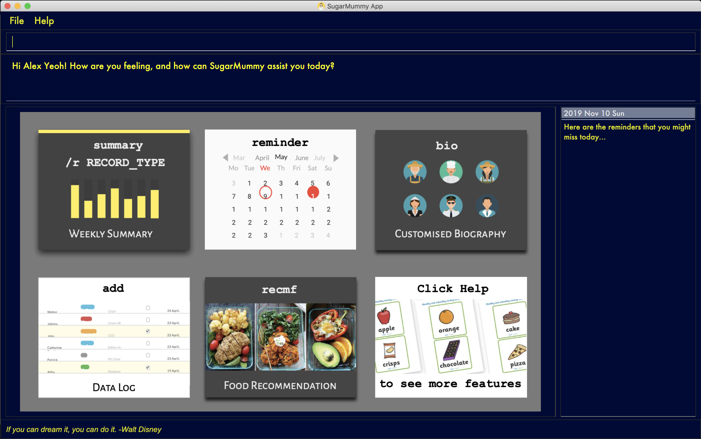

By: Team CS2103-T16-1 Since: Sep 2019 Licence: MIT
- 1. Introduction
- 2. Quick Start
- 3. Features
- 3.1. DATA LOG
- 3.2. CALENDAR AND REMINDER
- 3.2.1. Add a reminder:
reminder - 3.2.2. Add an event:
event - 3.2.3. View calendar entries:
calendar - 3.2.4. Snooze reminder:
snooze[coming in v2.0] - 3.2.5. Complete a task:
complete[coming in v2.0] - 3.2.6. Set time zone:
timezone[coming in v2.0] - 3.2.7. Search for entries in calendar:
search[coming in v2.0] - 3.2.8. Delete an entry in calendar
[coming in v2.0]
- 3.2.1. Add a reminder:
- 3.3. PERSONALISED USER EXPERIENCE
- 3.3.1. Show a list of all achievements the user has attained:
achievement - 3.3.2. Shows a page displaying the user profile of the user:
bio - 3.3.3. Adds a biography for the user using specified fields:
addbio - 3.3.4. Delete biography
[coming in v2.0] - 3.3.5. Edit a biography for the user using specified fields:
editbio - 3.3.6. Sets the background picture using a specified file path:
bg - 3.3.7. Sets the font color of the text:
fontcolor - 3.3.8. Displays the daily motivation message of the day:
dailymsg - 3.3.9. Personalized avatar
[coming in v2.0]
- 3.3.1. Show a list of all achievements the user has attained:
- 3.4. DATA ANALYSIS
- 3.5. Food Recommendation
- 3.6. Other Common Features
- 4. Features Coming in v2.0
- 5. Command Summary
- 6. FAQ
1. Introduction
Do you feel it difficult to keep the right diets for type II diabetes? Do you want to manage your hectic schedule? Do you want to have a better overview of your health data? Do you want to move to a healthier lifestyle? If your answer is yes, then SugarMummy is perfect for you! SugarMummy is a lifestyle tracker and planner that aims to combat Type II diabetes by encouraging users to keep a healthy lifestyle. Moreover, being a computer app with Command Line Interface, SugarMummy is optimized for fast typers who has access to a computer most of the time.
Hope following features will benefit you and enjoy!
-
Data tracker for various data types (blood sugar levels, diets, exercise, clinic appointments, medical finance and so on!)
-
Easy-to-use reminder and calendar
-
Personalized user experience and bio encouragements
-
Weekly and Monthly summary for your activities and health level
-
Customized recommendations for healthy dieting
2. Quick Start
-
Download the latest
sugarmummy.jarhere. -
Copy the file to the folder you want to use as the home folder for data records.
-
Double-click the file to start the app. The GUI should appear in a few seconds.
 -
Type the command in the command box and press Enter to execute it.
e.g. typinghelpand pressing Enter will open the help window. -
Some example commands you can try:
-
addr/bloodsugar v/10 t/now: adds abloodsugarrecord to the app. -
delete3: deletes the 3rd record shown in the current list -
exit: exits the app
-
-
Refer to Section 3, “Features” for details of each command.
3. Features
Command Format
-
Words in
UPPER_CASEare the parameters to be supplied by the user e.g. inreminder d/DESCRIPTION,DESCRIPTIONis a parameter which can be used asreminder d/medicine. -
Items in square brackets are optional e.g
d/DESCRIPTION [r/REPETITION]can be used asd/medicine r/dailyor asd/medicine. -
Items with
… after them can be used multiple times including zero times e.g.[t/TAG]…can be used ast/friend,t/friend t/familyetc. -
Parameters can be in any order e.g. if the command specifies
d/description dt/2020-01-20 12:00,dt/2020-01-20 12:00 d/descriptionis also acceptable.
3.1. DATA LOG
3.1.1. Add a data entry to the diabetes tracker app: add
Format: add rt/RECORD_TYPE v/VALUE t/TIME [t/TIME_END]
DateTime must be the last field.
3.1.2. Show a list of all data entries in the diabetes tracker app: list
Format: list [r/RECORD_TYPE] …
If a specific RECORD_TYPE is provided, it will list the data entries that are of RECORD_TYPE. If more than 1 RECORD_TYPE is provided, it will list all data entries of the requested types. Otherwise, it lists all types of recent data entries.
3.1.3. Edit an existing entry in the diabetes tracker app: edit
Format: edit INDEX [v/VALUE] [t/TIME] [t/TIME_END]
Edits the entry at the specified INDEX. The index refers to the index number shown in the displayed entries list. The index must be a positive integer. At least one of the optional fields must be provided. Existing values will be updated to the input values.
3.1.4. Deletes a specified data entry from the diabetes tracker app: delete
Format: delete INDEX
Index must be a positive integer
The index refers to the index number shown in the displayed entries list
3.2. CALENDAR AND REMINDER
3.2.1. Add a reminder: reminder
Format: reminder d/DESCRIPTION dt/DATETIME [r/REPETITION]
Add a reminder at a specific time starting from a date. There is no repetition by default, user can specify a daily or weekly or no repetition optionally.
3.2.2. Add an event: event
Format: event d/DESCRIPTION dt/DATETIME [dt/DATETIME] [td/TIME_DURATION]
Add an event with starting time and optional ending time. Optionally set a reminder some time before the event.
3.2.3. View calendar entries: calendar
Format: calendar [ym/YEAR_MONTH] [ymw/YEAR_MONTH_DAY] [ymd/YEAR_MONTH_DAY]
View calendar entries in a month or in a week or on a day.
ymw accepts a date also but it will include all days in the same week as the given date and week starts from Monday.
(If more than one of the arguments are present, then it accepts the one with the smallest time unit. e.g. if ymw and ymd are
both typed in, then it only shows entries on the given date if the date is valid.)
3.2.4. Snooze reminder: snooze [coming in v2.0]
Format: snooze [tp/TIME_PERIOD]
Silence the current reminder and activate it after a time period.
3.2.5. Complete a task: complete [coming in v2.0]
Format: complete [INDEX]… [t/TIME]
Mark all the reminders before now as completed if no argument provided. Otherwise, mark only those tasks with indices provided or before the specific time as completed.
3.2.6. Set time zone: timezone [coming in v2.0]
Format: timezone tz/TIME_ZONE [t/TIME] [t/TIME_END]
Set the time zone of the application permanently or in any time interval(e.g. For travelling).
3.2.7. Search for entries in calendar: search [coming in v2.0]
Format: search [KEYWORD] [t/TIME] [t/END_TIME] [tp/TYPE] [v/VENUE] [p/PEOPLE]
Search for all entries by providing keyword, time interval, type, venue or people.
3.2.8. Delete an entry in calendar [coming in v2.0]
Delete an event that you do not want to keep track anymore.
3.3. PERSONALISED USER EXPERIENCE
3.3.1. Show a list of all achievements the user has attained: achievement
Format: achievement
Display the current ranking of the user (i.e. Bronze III, Bronze II, Bronze I, Silver III, Silver II, Silver I, Gold…Platinum…Diamond) followed by milestone achievements acquired by the user.
3.3.2. Shows a page displaying the user profile of the user: bio
Format: bio
Display a page containing user information such as the user’s profile picture, name, nric, gender, date of birth, contact number, address and other biography information that the user would like to include. Includes an icon used to represent the user based on his/ her BMI.
3.3.3. Adds a biography for the user using specified fields: addbio
Format: addbio n/NAME [nric/NRIC] [g/GENDER] [dob/DATE_OF_BIRTH] p/CONTACT_NUMBER e/EMERGENCY_CONTACT m/MEDICAL_CONDITION [a/ADDRESS] [dp/PROFILE_PICTURE_PATH] [o/OTHERS]
Profile picture of the user is set using a given file path. If the file that is given is invalid, the user is shown an error message. Name, contact number, emergency contact number and medical condition are compulsory fields. (if a user of this app happens to have no medical condition, he / she may input NIL)
3.3.5. Edit a biography for the user using specified fields: editbio
Format: editbio [n/NAME] [nric/NRIC] [g/GENDER] [dob/DATE_OF_BIRTH] [p/CONTACT_NUMBER] [e/EMERGENCY_CONTACT] [m/MEDICAL_CONDITION] [a/ADDRESS] [dp/PROFILE_PICTURE_PATH] [o/OTHERS]
Profile picture of the user is set using a given file path. If the file that is given is invalid, the user is shown an error message. If no parameters are set, the program displays a message suggesting the user to set biography information using the specified fields.
3.3.6. Sets the background picture using a specified file path: bg
Format: bg p/PATH
If the file that is given is invalid, the user is shown an error message.
3.3.7. Sets the font color of the text: fontcolor
Format: fontcolor c/COLOUR
Sets the font to a colour specified by the user (eg. yellow, blue 00FF00)
3.3.8. Displays the daily motivation message of the day: dailymsg
Format: dailymsg
3.3.9. Personalized avatar [coming in v2.0]
User can customize his or her own avatar and the avatar will have body shapes according to user BMI. This helps to motivate them to have a healthy BMI.
3.4. DATA ANALYSIS
3.4.1. Display the daily/weekly/monthly average of records in a line graph: average
Format: average a/AVERAGE_TYPE r/RECORD_TYPE [n/COUNT]
AVERAGE_TYPE is either "daily", "weekly" or "monthly".
RECORD_TYPE is either "bloodsugar" or "bmi".
Displays a graph of the "daily"/"weekly"/"monthly" average of a particular RECORD_TYPE.
COUNT is an integer between 1 to 9 inclusive.
If COUNT is given, SugarMummy shows up to COUNT most recent number of average values.
Else, COUNT is set to 5 by default and show most recent 5 average values.
| If SugarMummy does not show exactly COUNT number of average values, that means you do not have enough records in the database. |
Example usage 1: average a/weekly r/bloodsugar:
Shows the latest 5 weekly average of blood sugar records.
Example usage 2: average a/daily r/bmi n/9:
Shows the latest 9 weekly average of BMI records.
3.4.2. Display interesting statistics: summary [coming in v1.4]
Shows minimum, maximum, average of the records. Categorize records into low, normal, high values in pie chart.
Format: summary r/RECORD_TYPE [d/START_DATE]
If START_DATE is given, statistics from START_DATE to the current date will be retrieved. Else, statistics will be based on all data.
3.4.3. Export summary of all medical records into pdf: export [coming in v2.0]
Format: export [d/START_DATE]
If START_DATE is given, summary from START_DATE to the current date will be exported. Else, summary of all data will be exported.
3.5. Food Recommendation
3.5.1. Recommending food: recmf
Recommends some medically suggested foods for type II diabetes patients.
To make searching more efficient, the user can specify two kinds of filters:
-
food type: in the form of following flags:
-nsv: non-starchy vegetable, such as broccoli
-sv: starchy vegetable, such as potato
-f: fruit, such as cherry
-p: protein, such as lean lamb
-s: snack, such fig roll
-m: meal, such as spanish omelet
- Note
-
-
Flags are case-insensitive.
-
If no flag is specifies, it is equivalent to specifying all flags. Namely, foods of all types will be shown.
-
For fast typing, white spaces are allowed before, between, or after flags. Duplicate flags are also allowed.
-
-
food name: in the form of
fn/FOOD_NAME [FOOD_NAME]…- Note
-
-
Food names are case-insensitive.
-
Food name matching is full-word matching. For example, "ch" does not match "chicken", which "chicken" matches both "Chicken" and "Rice with Chicken".
-
fn/is the only allowed prefix forrecmfcommand. If onlyfn/presents without following food names, all foods (of specified types) will be shown.
-
Format: recmf [-nsv] [-sv] [-f] [-p] [-s] [-m] [fn/FOOD_NAME FOOD_NAME…]
Examples:
recmf -p -f recmf fn/chicken recmf -p -m -f fn/chicken
3.5.2. Adding new food items : addfood
Adds a new food item of certain category for future recommendations. The following six fields are compulsorily required:
-
food name:
fn/FOOD_NAME
Food name should be less than 30 characters. This is mainly for display quality and readability. Only alphabets, numbers, and whitespace are allowed in the name. -
food type:
ft/FOOD_TYPE
Food types should be exactly one of the following: nsv(non-starchy vegetable), sv(starchy vegetable), f(fruit), p(protein), s(snack), m(meal). -
calorie (cal):
ca/CALORIE
Calorie should be less than 700(cal) to be considered as safe for type II diabetes patients. -
gi:
gi/GI
Glycemic Index should be less than 70 to be considered as safe for type II diabetes patients. -
sugar (g):
su/SUGAR
Sugar should be less than 25(g) to be considered as safe for type II diabetes patients. -
fat (g):
fa/FAT
Fat should be less than 35(g) to be considered as safe for type II diabetes patients.- Note
-
-
No duplicate food names are allowed.
-
All nutrition values are numerical values and should be equal or greater than zero. Besides, the values are suggested to be per serving.
-
The order of fields is flexible.
-
Format: addfood fn/FOOD_NAME ft/FOOD_TYPE ca/CALORIE gi/GI su/SUGAR fa/FAT
Example:
addfood fn/Cucumber ft/f ca/15 gi/15 fa/0 su/1.7
4. Features Coming in v2.0
4.1. Autocomplete Command
SugarMummy will recommend list of possible commands that can be add on to user current input.
4.2. Clearing all entries: clear all
Clears all recorded data in SugarMummy.
4.3. Encrypting data files: enc [KEY]
The user can optionally provide a key to encrypt all the data. Afterwards, all the stored user input can only be viewed with the user-defined key.
4.4. Detailing workout schedule
User can enter details of a workout schedule.
For example: Do exercise A for 10 minutes then switch to exercise B for 5 minutes.
4.5. Timing Workout
Displays workout instructions and a timer on screen. Screen instruction changes when the time for that particular exercise is up. Time required for each exercise is dictated by stored workout schedule.
4.6. Sharing with community
The user is able to interact with others who is using SugarMummy. A community platform will be provided for users to share their daily activities and health tips. This community is expected to help the user obtain encouragements and comforts.
5. Command Summary
-
Achievement:
achievement -
Add:
add r/RECORD_TYPE v/VALUE t/TIME [t/TIME_END]
E.g.add r/bloodsugar v/10 t/now -
Add bio :
addbio n/NAME [nric/NRIC] [g/GENDER] [dob/DATE_OF_BIRTH] p/CONTACT_NUMBER e/EMERGENCY_CONTACT
m/MEDICAL_CONDITION [a/ADDRESS] [dp/PROFILE_PICTURE_PATH] [o/OTHERS]
E.g.addbio n/Bob p/98765432 e/91234567 m/Type II Diabetes -
Add Food:
addfood fn/FOOD_NAME ft/FOOD_TYPE ca/CALORIE gi/GI su/SUGAR fa/FAT
E.g.addfood fn/Cucumber ca/15 gi/15 fa/0 su/1.7 -
Average:
average a/AVERAGE_TYPE r/Record_TYPE [n/COUNT]
E.g.average a/weekly r/bloodsugar n/3 -
Bio:
bio -
Bg:
bg p/PATH
E.g.bg p//Users/Bob/Pictures/bg.jpg -
Calendar
calendar [ym/YEAR_MONTH] [ymw/YEAR_MONTH_DAY] [ymd/YEAR_MONTH_DAY]
E.g.calendar ymd/2019-12-24 -
Dailymsg:
dailymsg -
Delete:
delete INDEX
E.g.delete 2 -
Edit:
edit INDEX [v/VALUE] [t/TIME] [t/TIME_END]
E.g.edit 1 v/15 t/now -
Export:
export [d/START_DATE]
E.gexport d/01.09.2019 -
Event:
event d/DESCRIPTION dt/DATETIME [dt/DATETIME] [td/TIME_DURATION]
E.g.event d/appointment dt/2019-12-14 16:00 td/01:00 -
Edit bio:
edit [n/NAME] [nric/NRIC] [g/GENDER] [dob/DATE_OF_BIRTH] [p/CONTACT_NUMBER] [e/EMERGENCY_CONTACT]
[m/MEDICAL_CONDITION] [a/ADDRESS] [dp/PROFILE_PICTURE_PATH] [o/OTHERS]
E.g.edit g/Male dp//Users/Bob/Pictures/dp.jpg
E.g.edit dp/C:\\Users\\Bob\\Pictures\\dp.jpg -
Font color:
fontcolor c/COLOUR
E.g.fontcolor yellow
E.g.fontcolor 00FF00 -
List:
list [r/RECORD_TYPE] …
E.g.list r/bloodsugar r/sleep r/food -
Recommend Food:
recmf [-nsv] [-sv] [-f] [-p] [-s] [-m] [fn/FOOD_NAME FOOD_NAME…]
E.g.recmf -p -m -f fn/chicken -
Reminder:
reminder DESCRIPTION t/TIME [t/TIME]… [rp/repetition] [v/venue] [p/people]
E.g.reminder insulin injection t/13:00 rp/daily -
Search:
search [KEYWORD] [t/TIME] [t/END_TIME] [tp/TYPE] [v/VENUE] [p/PEOPLE]
E.g.search tp/event v/NUH -
Snooze:
snooze [tp/TIME_PERIOD]
E.gsnooze 30min -
Summary:
summary r/RECORD_TYPE [d/START_DATE] -
Reminder:
reminder d/DESCRIPTION dt/DATETIME [r/REPETITION]
E.g.reminder d/insulin injection dt/2019-11-30 17:30 r/daily
E.gsummary r/bloodsugar d/01.09.2019
6. FAQ
-
How should I save my data?
SugarMummy data are saved in the hard disk automatically after any command that changes the data. There is no need to save manually.